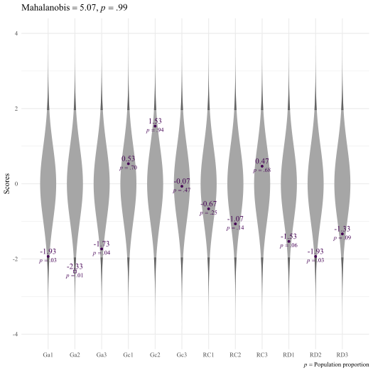

Introduction to the unusualprofile package
W. Joel Schneider & Feng Ji
2020-10-26
Source:vignettes/tutorial_unusualprofile.Rmd
tutorial_unusualprofile.RmdThe unusualprofile package can identify multivariate outliers conditional on predictors (Ji, 2018).
Univariate Outliers
A univariate outlier is far from most of the other scores in a distribution. You can easily spot a large outlier in this histogram:

Figure 1. A histogram with a univariate outlier.
If we want to quantify the rarity of the univariate outlier, we could convert the outlier to a z-score, which indicates the outlier’s distance from the population mean in standard deviation units. In this case, the outlier is 10 standard deviations from the mean of the other scores.
Multivariate Outliers
A univariate outlier refers to a single case from a single variable. A multivariate outlier refers to a single row of data consisting of 2 or more variables.
A multivariate outlier might not be unusual on any particular variable, but has an unusual pattern of scores. For example, in the plot below, the red point is not very unusual in a univariate context—just 1 standard deviation from the mean of either variable. However, because x and y are highly correlated, it is extremely rare for a data point to differ by 2 standard deviations.

Figure 2. A scatterplot with a multivariate outlier.
Scatterplots are great for inspecting multivariate outliers with a small number of variables. Unfortunately, scatterplots can only display 2 or 3 variables at a time. A different way to view multivariate data is to show each case as a profile of scores connected by lines. In the plot below, most of the lines are nearly flat—highly correlated variables with the same means and standard deviations will generally produce flat profiles. The multivariate outlier, in red, is clearly not flat.
Figure 3. A two-variable violin plot with a multivariate outlier.
Suppose that we have four variables, all standard normal. Because the four variables correlate at 0.99, the profiles are all quite flat. However, the red profile {1,1,−1,1} is much less flat, making it unusual in this context.
Figure 4. A four-variable violin plot with a multivariate outlier.
In the plot above, we can see plainly that the red profile is unusual. However, we cannot yet tell exactly how unusual it is. We would like a measure of its rarity.
Quantifying Rarity
The Euclidean Distance
The simplest (but ultimately unsatisfying) way to measure a profile’s rarity is with the Euclidean distance. A multidimensional extension of the Pythagorean Theorem, the Euclidean distance is the square root of the sum of the squared differences on each dimension from some reference point. The reference point of interest is usually the vector of means from each variable—the centroid. The Euclidean distance of point p1 = (1,1,−1,1) to the centroid p2 = (0,0,0,0) is
\[\sqrt{(p_1-p_2)'(p_1-p_2)}=\sqrt{(1-0)^2+(1-0)^2+(-1-0)^2+(1-0)^2}=2\]
The Euclidean distance of point (1,1,1,1) to the centroid is also 2, yet if the two variables are highly correlated, point (1,1,−1,1) is much more unusual than point (1,1,1,1). Though fairly simple to calculate, the Euclidean distance is insensitive to the relationships among the variables, making it a poor choice for quantifying the rarity of profiles of correlated variables.
The Mahalanobis Distance
In 1936, P. R. Mahalanobis introduced a variant of the Euclidean distance that accounts for the covariance of the variables. Conceptually, the Mahalanobis distance is a Euclidean distance of profile scores if the variables are rotated and rescaled to fit on their principal component axes. Because principal components are always uncorrelated, distances in principal component space always have the same meaning regardless of the relationships of the original variables.
Computationally, the principal components need not be calculated explicitly. We simply need to invert the covariance matrix of the profile variables:
\[d_{M}=\sqrt{(X-\mu_X)'\Sigma_X^{-1}(X-\mu_X)}\]
Where
\(d_M\) is the Mahalanobis distance
\(X\) is a vector of variable scores
\(\mu_X\) is the vector of variable means of \(X\) (i.e., the centroid of \(X\))
\(\Sigma_X\) is the covariance matrix of the variables in vector \(X\)
If the variables in X are normally distributed, essentially the Mahalanobis distance is creating principal component scores that are uncorrelated standard normal variates, squaring each score, and then summing each row of scores. Adding squared uncorrelated standard normal variates just so happens to be how the χ2 distribution is made. The degrees of freedom in the χ2 distribution corresponds to the number of standard normal variates that are squared and summed.
Thus, if there are k normally distributed variables in vector X, the Mahalanobis distance squared for vector X has a χ2 distribution with k degrees of freedom. In mathematical notation:
\[d_M ^ 2 \sim \chi^2(k)\]
Thus, if we can assume the profile variables are multivariate normal, we can use the cumulative distribution function of the χ2 distribution to quantify how unusual a particular profile compares to the general population of profiles.
Suppose that a Mahalanobis distance for a row of data from 5 standard normal variates is 15.5. The cumulative distribution function for the χ2 distribution with 5 degrees of freedom is 0.99. Thus, the row of data is a multivariate outlier.
Conditional Mahalanobis Distances
One the disadvantages of the Mahalanobis Distance is that it treats all the principal component dimensions equivalently. For highly correlated variables, the first principal component (or general factor) is of particular importance. We might want to distinguish between cases that are unusual on the first principal component and scores that are unusual on the remaining principal components.
For example, in a distribution of 4 highly correlated standardized variables, the point (4,4,4,4) is unusual because each point is unusual—four standard deviations above the mean. However, after accounting for its extreme elevation, the profile is perfectly flat. That is, the profile is unusually elevated, but has the modal profile shape. Of course, a perfectly flat profile is unusual in a different sense. It is extremely flat in the same sense that a score equal to the mean is extremely average.
In contrast, the point (−4, 4, −4, 4) is perfectly average in its elevation—the scores average to 0. It has, however, an unusually uneven shape.
Distinguishing Profile Shape from Profile Elevation
One way to define the profile elevation is to create a composite score from the sum of profile variables. All profiles that produce the same composite score are defined to have the same profile elevation. For ease of computation, the profile variables and the composite score can be re-scaled to have the same metric—preferably the z-score metric.
Suppose that we compare all profiles that have the same elevation but have different profile shapes. Imagine that four standardized variables correlate according to the structural model below, and we select a subset of cases in which the profiles have an elevation of 1 (i.e., their composite score has a z-score of 1).

Figure 5. A simple model with standardized loadings
In the plot below, two score profiles with an elevation of 1 are shown. The red profile is flat and unremarkable, whereas the blue profile is unusually uneven.
Figure 6. Conditional distributions for people with a composite score of 1.
A Worked Example
Suppose that among standard multivariate normal
\[X=\{X_1,X_2, X_3, X_4\} = \{0,1,-1,-1\}. \]

Figure 7. Example profile in a standard multivariate normal distribution.
# Standardized observed scores X <- c(X_1 = 0, X_2 = 1, X_3 = -1, X_4 = -1)
How can we calculate the Mahalanobis distance for profiles that all have the same elevation? We will show how to do so in two ways. The easier of the two methods will be to use the simstandard package to create the data and the unusualprofile package to calculate the conditional Mahalanobis distance. For your reference, we will also see how to do everything “by hand” using matrix algebra.
Calculations using the simstandard and unusualprofile packages
The simstandard package can create simulated multivariate normal data from a structural equation model. The first step is to specify the model using lavaan syntax:
model <- "X =~ 0.95 * X_1 + 0.90 * X_2 + 0.85 * X_3 + 0.60 * X_4"
Using the simstandard package, we can find the model-implied correlation matrix. The sim_standardized_matrices function outputs a large list which includes the model-implied correlation matrix and the names of observed variables and composite scores.
# Fit object fit <- simstandard::sim_standardized_matrices(model) # Observed Variable Names v_observed <- fit$v_names$v_observed # Composite Variable Names v_composite <- fit$v_names$v_composite_score # Variable names v_names <- c(v_observed, v_composite) # Model-implied correlations of all variables R_all <- fit$Correlations$R_all[v_names, v_names] R_all #> X_1 X_2 X_3 X_4 X_Composite #> X_1 1.00 0.85 0.81 0.57 0.93 #> X_2 0.85 1.00 0.76 0.54 0.91 #> X_3 0.81 0.76 1.00 0.51 0.89 #> X_4 0.57 0.54 0.51 1.00 0.75 #> X_Composite 0.93 0.91 0.89 0.75 1.00 # Model-implied correlations of observed variables R_X <- R_all[v_observed,v_observed] R_X #> X_1 X_2 X_3 X_4 #> X_1 1.00 0.85 0.81 0.57 #> X_2 0.85 1.00 0.76 0.54 #> X_3 0.81 0.76 1.00 0.51 #> X_4 0.57 0.54 0.51 1.00
Now we use the cond_maha function from the unusualprofile package to calculate the conditional Mahalanobis distance.
# Convert X to row matrix, and add the composite score d <- t(X) %>% simstandard::add_composite_scores(m = model) d #> X_1 X_2 X_3 X_4 X_Composite #> 1 0 1 -1 -1 -0.29 # Calculate the conditional Mahalanobis distance cm <- cond_maha(data = d, R = R_all, v_dep = v_observed, v_ind_composites = v_composite) cm #> Conditional Mahalanobis Distance = 3.2118, df = 3, p = 0.9839
plot(cm, family = myfont)
Figure 8. A profile of z-scores in the context of population distributions (darker gray) and conditional distributions (lighter gray) controlling for overall composite score
Here we can see that the profile is more unusual than 98 of profiles with the same elevation (i.e., a composite score of z = -0.29).
Calculations with Matrix Algebra
As an instructive exercise, we will do the calculations “by hand” as well. We need to specify a matrix of loadings:
# Factor loadings lambda <- matrix(c(0.95, 0.90, 0.85, 0.60), dimnames = list(paste0("X_", 1:4), "X")) lambda #> X #> X_1 0.95 #> X_2 0.90 #> X_3 0.85 #> X_4 0.60
Now we calculate the model-implied correlations among the observed variables:
# Observed Correlations R_X <- lambda %*% t(lambda) # Replace diagonal with ones diag(R_X) <- 1 R_X #> X_1 X_2 X_3 X_4 #> X_1 1.00 0.85 0.81 0.57 #> X_2 0.85 1.00 0.76 0.54 #> X_3 0.81 0.76 1.00 0.51 #> X_4 0.57 0.54 0.51 1.00
Presented formally, the model-implied correlations are:
\[R_{X} \approx \begin{bmatrix} 1 & .85 & .81 & .57\\ .85 & 1 & .76 & .54\\ .81 & .76 & 1 & .51\\ .57 & .54 & .51 & 1 \end{bmatrix}\]
We need to use this matrix to create a new 5 × 5 correlation matrix that includes the correlations among the four variables and also each variable’s correlation with the general composite score (i.e., the standardized sum of four variables). Fortunately, such a matrix can be calculated with only a few steps.
We will need a “weight” matrix that will select each variable individually and also the sum of the four variables.
\[w=\begin{bmatrix} 1 & 0 & 0 & 0 & 1\\ 0 & 1 & 0 & 0 & 1\\ 0 & 0 & 1 & 0 & 1\\ 0 & 0 & 0 & 1 & 1 \end{bmatrix}\]
Notice that the first column of this matrix has a 1 in first position and zeroes elsewhere. It selects the first variable, X1. The second column selects X2, and so on to the fourth column. The last column is all ones, which will select all four variables and add them up.
We can construct this matrix with the diag function, which creates an identity matrix. This matrix is appended to a column of ones:
w <- cbind(diag(4), rep(1,4)) w #> [,1] [,2] [,3] [,4] [,5] #> [1,] 1 0 0 0 1 #> [2,] 0 1 0 0 1 #> [3,] 0 0 1 0 1 #> [4,] 0 0 0 1 1
Now we can use the weight matrix w to calculate the covariance matrix:
\[\Sigma = w'R_{X}w\]
Sigma <- t(w) %*% R_X %*% w Sigma #> [,1] [,2] [,3] [,4] [,5] #> [1,] 1.00 0.85 0.81 0.57 3.2 #> [2,] 0.85 1.00 0.76 0.54 3.2 #> [3,] 0.81 0.76 1.00 0.51 3.1 #> [4,] 0.57 0.54 0.51 1.00 2.6 #> [5,] 3.23 3.16 3.08 2.62 12.1
\[\Sigma \approx \begin{bmatrix} 1 & .85 & .81 & .57 & 3.23\\ .85 & 1 & .76 & .54 & 3.16\\ .81 & .76 & 1 & .51 & 3.08\\ .57 & .54 & .51 & 1 & 2.62\\ 3.23 & 3.16 & 3.08 & 2.62 & 12.09 \end{bmatrix}\]
Now we need to convert the covariance matrix to a correlation matrix. With matrix equations, we would need to create a matrix of with a vector of variances on the diagonal:
\[D = \text{diag}(\Sigma)\] Then we would take the square root, invert this matrix, and then pre-multiply it and post-multiply it by the covariance matrix.
\[R_{All} = D^{-0.5}\Sigma D^{-0.5}\]
\[R_{All} \approx \begin{bmatrix} 1 & .86 & .81 & .57 & .93\\ .86 & 1 & .76 & .54 & .91\\ .81 & .76 & 1 & .51 & .89\\ .57 & .54 & .51 & 1 & .75\\ .93 & .91 & .89 & .75 & 1 \end{bmatrix}\]
Fortunately, all this complication of converting covariances to correlations can be sidestepped by using the cov2cor function:
Calculate composite scores
To calculate the standardized composite score \(z_C\), add each variable’s deviation from its own mean and divide by the square root of the sum of the observed score covariance matrix.
\[z_C=\frac{1'(X-\mu_X)}{\sqrt{1'\Sigma_X1}}\]
Where
\(z_C\) is a standardized composite score.
\(X\) is a vector of observed scores.
\(\mu_X\) is the vector of means for the \(X\) variables.
\(\Sigma_X\) is the covariance matrix of the \(X\) variables.
\(1\) is a vector of ones compatible with \(\Sigma_X\).
The composite score is:
Estimate expected test scores conditioned on a composite score
Given a particular composite score, we need to calculate a predicted score. That is, if the composite score is 1.5 standard deviations above the mean, what are the expected subtest scores?
\[\hat{X}=\sigma_Xz_Cr_{XX_C}+\mu_X\]
Where
\(\hat{X}\) is the vector of expected subtest scores
\(\sigma_X\) is the vector of standard deviations for \(X\)
\(z_C\) is the composite score
\(r_{XX_C}\) is a vector of correlations of each variable in \(X\) with the composite score \(z_C\)
\(\mu_X\) is the vector of means for \(X\)
Thus,
# Predicted value of X, given composite score X_hat <- sd_X * z_C * R_all[v_observed, v_composite] + mu_X
Calculating the Conditional Mahalanobis Distance
\[d_{M_C}=\sqrt{\left(X-\hat{X}\right)'\Sigma_{X}^{-1}\left(X-\hat{X}\right)}\]
Where
\(d_{M_C}\) is the Conditional Mahalanobis Distance
\(X\) is a vector of subtest scores
\(\hat{X}\) is the vector of expected subtest scores
\(\Sigma_{X}\) is the covariance matrix of the subtest scores
Suppose there are k outcome scores, and j composite scores used to calculate the expected scores \(\hat{X}\). If multivariate normality of the subtest scores can be assumed, then the Conditional Mahalanobis Distance squared has a χ2 distribution with k − j degrees of freedom.
\[d_{M_C}^{2} \sim\chi^{2}(k-j)\]
# Number of observed variables k <- length(v_observed) # Number of composite variables j <- length(v_composite) # Cumulative distribution function p <- pchisq(d_mc ^ 2, df = k - j) p #> [1] 0.98
If we can assume that the observed variables in X are multivariate normal, a profile of X = {0,1,-1,-1} is more unusual than 98% of profiles that also have a composite score of zC = -0.29.
Models with factor scores
Suppose we have two cognitive predictors of reading, General Comprehension/Knowledge (Gc) and General Auditory Processing (Ga). These cognitive abilities are precursor abilities to Reading Decoding (RD) and Reading Comprehension (RC). Each cognitive and academic ability is measured with three tests each. The theoretical model of how each variable relates to every other variable is shown below.

General Comprehension/Knowledge (Gc) and General Auditory Processing (Ga) Predict Reading Decoding and Reading Comprehension
We want to know if a person’s pattern of reading scores are unusual, given the cognitive scores.
Factor scores are calculated using Thurstone’s method (Thurstone, 1935):
\[\hat{F}= R_{FF}\Lambda_{FX} R_{XX}^{-1}X=R_{FX}R_{XX}^{-1}X\]
Where
\(\hat{F}\) is a vector of a person’s estimated factor scores.
\(R_{FF}\) is the correlation matrix among the latent factors.
\(\Lambda_{FX}\) is the matrix of loadings from factors to observed scores.
\(R_{FX}\) is a correlation matrix between the common factors and the observed variables.
\(R_{XX}^{-1}\) is the inverse of the correlation matrix among the observed variables.
\(X\) is a vector of a person’s standardized scores on the observed variables.
Predicting a profile’s rarity in a population
\[d_{C M}=\sqrt{(X-\hat{X})'R_{XX}^{-1}(X-\hat{X})}\]
Where
\(\hat{X}\) is the vector of predicted outcome scores (i.e., the predicted academic abilities predicted by the factor scores of cognitive abilities).
\(y\) is the vector of outcome scores (i.e., the factor scores of academic abilities estimated from our SEM).
\(R\) is the matrix of conditional variance among the factor scores (the composite correlation between factor scores calculated using population correlation among observed scores, that is, \(\beta'\Sigma_{xx}\beta\), where \(\beta=\Sigma_{yx}\Sigma_{xx}^{-1}\).
If multivariate normality can be assumed and there are k outcome scores,
\[d_{M_C}^{2} \sim\chi^{2}(k)\]
A Worked Example
Here we load packages we will need and create a function for converting raw scores with a specific population mean and standard deviation to z-scores:
library(tibble) library(tidyr) library(dplyr) library(purrr) library(knitr) library(unusualprofile) # Function to create *z*-scores zscore <- function(x, mean = 100, sd = 15) (x - mean) / sd
We can use syntax from the lavaan package to specify the standardized coefficients of our model.
# Model of Reading m_Reading <- " Ga =~ 0.83 * Ga1 + 0.92 * Ga2 + 0.95 * Ga3 Gc =~ 0.88 * Gc1 + 0.71 * Gc2 + 0.85 * Gc3 RD =~ 0.93 * RD1 + 0.87 * RD2 + 0.85 * RD3 RC =~ 0.91 * RC1 + 0.86 * RC2 + 0.90 * RC3 Ga ~~ 0.68 * Gc RD ~ 0.47 * Ga + 0.53 * Gc RC ~ 0.05 * Ga + 0.40 * Gc + 0.43 * RD "
We are going to need several bits of information about this model. We will call the sim_standardized_matrices function from the simstandard package. In particular, we need the correlation matrix implied by our model.
fit_Reading <- simstandard::sim_standardized_matrices(m_Reading) R <- fit_Reading$Correlations$R_all
Here we enter the standard scores (Mean = 100, SD = 15) for a single person. Then we convert each standard score to z-scores. Finally, we use the simstandard package’s add_factor_scores function to add estimated factor scores to the data frame.
d_case <- tibble( Ga1 = 71, Ga2 = 65, Ga3 = 74, Gc1 = 108, Gc2 = 123, Gc3 = 99, RD1 = 77, RD2 = 71, RD3 = 80, RC1 = 90, RC2 = 84, RC3 = 107 ) %>% mutate_all(zscore, mean = 100, sd = 15) %>% simstandard::add_composite_scores(m = m_Reading) d_case %>% gather("Ability","z-score") %>% mutate(SS = as.integer(`z-score` * 15 + 100)) %>% select(Ability,SS, `z-score`) %>% kable(digits = 2, caption = "Case Scores") %>% kableExtra::kable_styling(., bootstrap_options = "striped")
| Ability | SS | z-score |
|---|---|---|
| Ga1 | 71 | -1.93 |
| Ga2 | 65 | -2.33 |
| Ga3 | 74 | -1.73 |
| Gc1 | 108 | 0.53 |
| Gc2 | 123 | 1.53 |
| Gc3 | 99 | -0.07 |
| RD1 | 77 | -1.53 |
| RD2 | 71 | -1.93 |
| RD3 | 80 | -1.33 |
| RC1 | 90 | -0.67 |
| RC2 | 84 | -1.07 |
| RC3 | 107 | 0.47 |
| Ga_Composite | 67 | -2.14 |
| Gc_Composite | 111 | 0.76 |
| RD_Composite | 74 | -1.73 |
| RC_Composite | 93 | -0.45 |
Indicator Scores
Suppose that we want to know if the academic performance scores are unusual, given the cognitive predictor scores.
First, let’s see if the observed score profile is unusual. We can calculate the (unconditional) Mahalanobis distance by putting all the observed variables as dependent variables:
v_Reading <- c("RD1","RD2","RD3","RC1","RC2","RC3") v_Cognitive <- c("Ga1","Ga2","Ga3","Gc1","Gc2","Gc3") m <- cond_maha(data = d_case, R = R, v_dep = c(v_Reading, v_Cognitive)) plot(m, p_tail = 0.05)

From the probability (p), we see that the overall observed score profile is quite unusual.

Now, let’s see if the academic scores are unusual by themselves:
cond_maha( data = d_case, R = R, v_dep = v_Reading) #> Mahalanobis Distance = 3.4206, df = 6, p = 0.9310
A little less unusual, but still unusual.
Now let’s see if the academic scores are unusual after controlling for the cognitive predictors:
dCM <- cond_maha( data = d_case, R = R, v_dep = v_Reading, v_ind = v_Cognitive) dCM #> Conditional Mahalanobis Distance = 3.2589, df = 6, p = 0.8992
Controlling for the cognitive predictors, did not alter our conclusion that the reading profile is unusual. It appears that the Reading scores are more unusual than about round(dCM$dCM_p * 100)% of Reading profiles from people with the same specified cognitive predictor scores.
Although we know that given the cognitive scores the Reading profile is unusual, we do not know which aspect of it is unusual. We can inspect the standardized residuals of the reading profile like so:
dCM$d_dep_residuals_z #> # A tibble: 1 x 6 #> RD1 RD2 RD3 RC1 RC2 RC3 #> <dbl> <dbl> <dbl> <dbl> <dbl> <dbl> #> 1 -1.42 -1.97 -1.01 -0.486 -1.03 1.12
If we can assume that the residuals are normally distributed, we can view the probability of the standardized residuals:
dCM$d_dep_cp #> # A tibble: 1 x 6 #> RD1 RD2 RD3 RC1 RC2 RC3 #> <dbl> <dbl> <dbl> <dbl> <dbl> <dbl> #> 1 0.0779 0.0246 0.157 0.314 0.152 0.870
In summary,
| Score | RD1 | RD2 | RD3 | RC1 | RC2 | RC3 |
|---|---|---|---|---|---|---|
| Score | 77.00 | 71.00 | 80.00 | 90.00 | 84.00 | 107.00 |
| Predicted score | 88.93 | 89.65 | 89.88 | 95.07 | 95.34 | 95.12 |
| Deviation | -11.93 | -18.65 | -9.88 | -5.07 | -11.34 | 11.88 |
| Std. Error of Est. | 8.41 | 9.48 | 9.80 | 10.44 | 11.02 | 10.56 |
| Standardized Residual | -1.42 | -1.97 | -1.01 | -0.49 | -1.03 | 1.12 |
| p | 0.08 | 0.02 | 0.16 | 0.31 | 0.15 | 0.87 |
Thus, we can see that all three decoding tests are lower than expectations, particularly RD2, the reading comprehension tests are within expectations, though RC3 is somewhat high.

Conditional Distributions for Reading, Controlling for Cognitive Predictors
Composite Score Model
Often, all we need do is calculate the composite scores and see if they are within expectations.
# Unconditional Reading Profile cond_maha(data = d_case, R = R, v_dep = Reading_Composite) # Conditional Reading Profile cond_maha(data = d_case, R = R, v_dep = Reading_Composite, v_ind = Cognitive_Composite)

Observed Scores, Given Composite Scores
Suppose that we want to know if the observed Gc scores are unusual, given the composite Gc score we have estimated.
dCM_Gc <- cond_maha(d_case, R = R, v_dep = c("Gc1", "Gc2", "Gc3"), v_ind = "Gc_Composite") dCM_Gc #> Conditional Mahalanobis Distance = 1.8396, df = 2, p = 0.8159
dCM_Gc$d_dep_residuals_z #> # A tibble: 1 x 3 #> Gc1 Gc2 Gc3 #> <dbl> <dbl> <dbl> #> 1 -0.342 1.67 -1.64 dCM_Gc$d_dep_cp #> # A tibble: 1 x 3 #> Gc1 Gc2 Gc3 #> <dbl> <dbl> <dbl> #> 1 0.366 0.952 0.0502
Here we see that the Gc profile is somewhat unusual, but not particularly so. Among people with a composite Gc of 111, this profile is more unusual than 82% of profiles. From the plot below, Gc2 is a little high (standardized residual = 1.67) and Gc3 is a little low (standardized residual = -1.64).